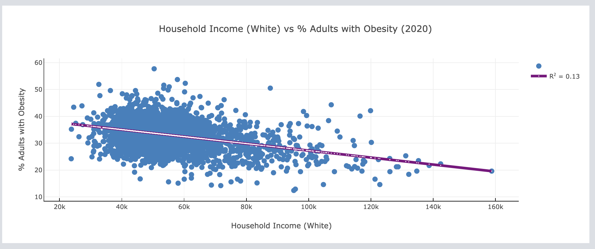
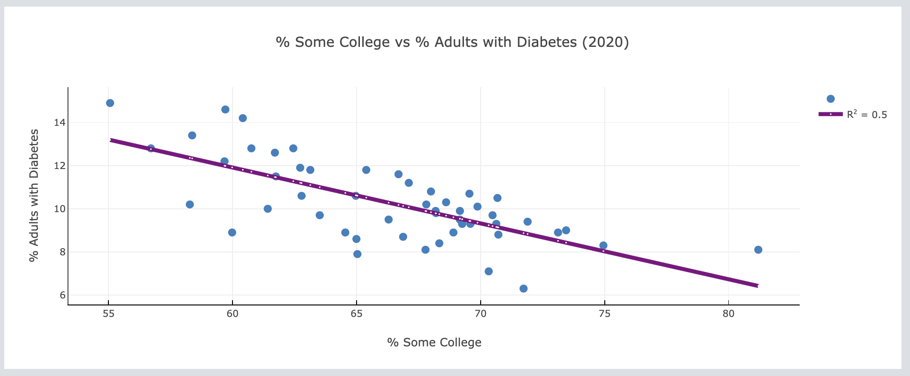
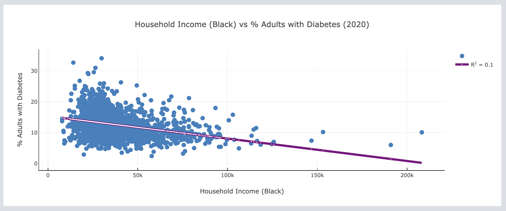

Factors Impacting Adults Obesity
Click on each plot for further details
Limited Access to Healthy Foods 2020
Limited access to healthy foods is positively associated with the rates of obesity in American adults. Decreased access to healthy foods caused a trend of increased obesity across the United States. For every 10% decrease in access to healthy foods, adult obesity increases by 7%.
Median Household Income White 2020
There is no association between median household income for any specific race, Asian, Hispanic, Black, or White, in the United States and prevalence of adult obesity.
Factors Impacting Adults Diabetes
Click on each plot for further details
Limited Access to Healthy Foods 2020

Limited access to healthy foods has no association with adult diabetes in the United States.
College Education Rate 2020
There is a moderate negative association between the percentage of people who have a college education and rates of adult diabetes. A 10% increase in those who get a college education results in a 2% decrease in diabetes prevalence in the United States.
Median Household Income Black 2020
There is no association between median household income for any specific race, Asian, Hispanic, Black, or White, in the United States and prevalence of adult diabetes.